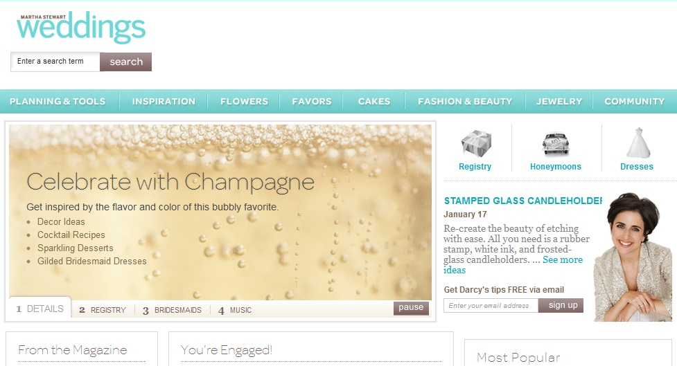

Portfolio: Competitive Analysis
Site Name: Mikkat Market
Url: http://www.mikkatmarket.com/
Date Visited:1/15/2012
Layout: Five Boxes
| Brand | Functionality | Interactivity | Navigation |
|---|---|---|---|
| Artsy-macro product shots to focus on craftsmanship of the detailing Clean-minimal use of colors; text is black and background is white Modern-font looks mechanical, contrasting product image Feminine- soft faded colors |
Site effectively showcases its products: clothing and accessories. Main navigation bar brings the viewer to secondary pages that showcase categories of the product: what's new, tops, bottoms, etc. The slider on the main image of the homepage toggles automatically between three images, each representing different product showcases: sale, new, hot item. |
Mouse rollover for product images in gallery: image darkens and product price and name shows. Mouse rollover for navigation: bar under each product category to show the viewer they can click on it. Individual product pages have different views, styled options on a model (with other products), as well as options to like the page on Facebook or to share it. |
The main navigation bar lies under the logo and stays present during navigation of secondary pages. First layer of text shows cart/account/login/etc, while the third layer shows ways to navigate the products. |


Site: Cedric Bihir
URL: http://www.cedricbihr.com/index.php
Date visited: 1/16/2012
Layout: Headline+Gallery
| Brand | Functionality | Interactivity | Navigation |
|---|---|---|---|
| Minimalist- design of the website is downplayed for showcasing the image in itself Artistic- Emphasis on the aesthetics of the image Clean- Muted tones and clean lines |
Using a gallery, the site uses the minimal amount of space to show maximum amount of pictures. Gallery allows the different shaped photos to be showcased side by side |
Minimal interactivity, each photo has a mouse rollover that showcases the project/series name on the right side of the white space | Logo on the top and small bar on the bottom that allows you to move between archive, films, contact, and journal. Each series can be entered by clicking the gallery image. the viewer can move through the images by clicking the hands on the bottom or the numbers. |

Site: Khan Academy
URL: http://www.khanacademy.org
Date visited:1/16/2012
Layout: Five Boxes
| Brand | Functionality | Interactivity | Navigation |
|---|---|---|---|
| Friendly- Easy to read directions and usable for everyone Educational- informational videos and descriptions laid out like a textbook Simple- navigation that is laid out in an easy, non-pretentious way |
Layout highlights new/eyecatching videos with titles Other videos are laid out by subject |
Options for the user to share via g+, facebook, email, and twitter. The front page also shows a "practice with an exercise" button next to the main video that links you to a progress page with exercises |
Below the main display of videos, the videos are laid out by a text separation per subject. The four videos on the bottom scroll can be changed by clicking the right or left arrow |
Site: NPR Music
URL: http://www.npr.org/music/?refresh=true
Date visited: 1/17/2012
Layout: Power Grid
| Brand | Functionality | Interactivity | Navigation |
|---|---|---|---|
| Informative-factual updates about the music world Mature- seems targeted towards a younger audience that takes themselves seriously Serious- color scheme is mostly black and blues. |
Showcase articles about different artists and news in the music world | Featured music streams on the right have an audio icon that directly opens the music stream on a new window. | Navigation bar allows the user to visit different sub pages within the site. The red arrows indicate a drop down menu. Option on the right of the navigation bar to "find artists a-z" |
Site: Martha Stewart
URL: http://www.marthastewart.com/
Date visited:1/17/2012
Layout: Five Boxes
| Brand | Functionality | Interactivity | Navigation |
|---|---|---|---|
| Domestic-focused on the pursuit of domestic queendom Friendly- Branded like Martha stewart's smile-something that is accessible to anyone Soothing-layout is in a color scheme of calm blues and greens |
The main image showcases different projects, tips, and recipes. The bottom boxes below the main image display links about martha's tv show, as well as specific recipes, etc. |
Search bar Pause option on the main image (runs through four different images) Videos embedded within the main page (before the fold) |
Navigation bar allows user to toggle between different areas of martha's expertise: weddings, home&garden, pets, etc. Each section has its own page with different color scheme but the same layout. |

Site: Sigg Bottles
URL: http://www.mysigg.com/
Date visited: 1/17/2012
Layout: Three Boxes
| Brand | Functionality | Interactivity | Navigation |
|---|---|---|---|
| Modern- Use words like 'design' and 'engineering' Approachable- Design that's accessible to the public Fun-top bar is made of half a bottle, interesting graphics and bright colors |
Effectively showcases the products (accessible from the main page) | Search box for the products Option to login to your account |
Main page has a product bar on the left side Large "SHOP NOW" button also brings user to product pages |
Site: Tiffany & Co.
URL: http://www.tiffany.com/
Date visited: 1/17/2012
Layout: Featured Image
| Brand | Functionality | Interactivity | Navigation |
|---|---|---|---|
| Luxurious-Minimal distraction from main image, lots of white space and unobtrusive text Timeless- Font that is as non-trendy as possible Minimal- sticks to one color (turquoise) with mostly white space |
Both selling the image of Tiffany's as a purveyor of love and literally selling tiffany's jewelry. Main page showcases the classic engagement ring. |
Search option Mouse rollover drop down menus on the main navigation bar "Saved item" option on product pages |
Products on the main navigation bar divided into categories (diamonds, watches, men's, etc) |
Site: Gawker Artists
URL: http://artists.gawker.com/
Date visited: 1/17/2012
Layout: Headlines & Gallerys
| Brand | Functionality | Interactivity | Navigation |
|---|---|---|---|
| Artistic- Features images from different artist Minimal- focusing on aesthetic impact of the individual artists Modern- lots of white space |
Showcases artist work through a gallery-type page | Search Box Under header, the user can sort through artists by selecting a medium Mouse rollover-image frame turns grey |
Clicking on a gallery image brings the user to an individual page about the artist, with more images of his/her work |
Site: Richard Avedon
URL: http://www.richardavedon.com/#p=-1&a=-1&at=-1
Date visited:1/17/2012
Layout: Featured Photo
| Brand | Functionality | Interactivity | Navigation |
|---|---|---|---|
| Classic-emphasis on the featured photo Ageless- not a modern feel but a minimalist white background |
Archive to showcase a late artist's life work (photo archive, collections, past exhibitions) | Text in main navigation bar turns grey during mouse rollover Chronology subpage has an interactive timeline with dots representing years |
One main navigation bar that allows the user to go in between archives of artist work Exhibition page links to external museum sites |
Site: Bottega Louie
URL: http://www.bottegalouie.com/main.html#
Date visited:1/17/2012
Layout: Featured Image
| Brand | Functionality | Interactivity | Navigation |
|---|---|---|---|
| Luxurious- overwhelming amounts of white space Minimal-limited color palette and visual stimuli Classic- logo that looks like a crest |
Provides information about the restaurant open hours, services, and address | Mouse click on the navigation bar under the logo brings the user information | Limited-main page stays the same but new text appears depending on where the user clicks Under the menu part of the bar, clicking on a name (lunch menu, dinner menu, etc) brings the user to a pdf of the menu |